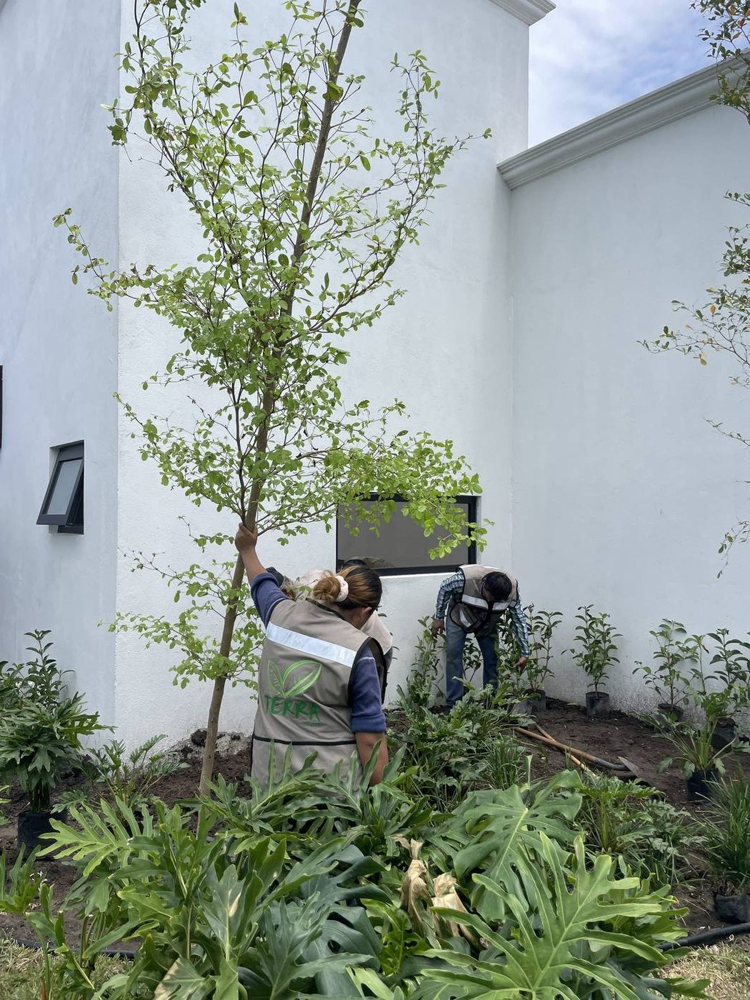
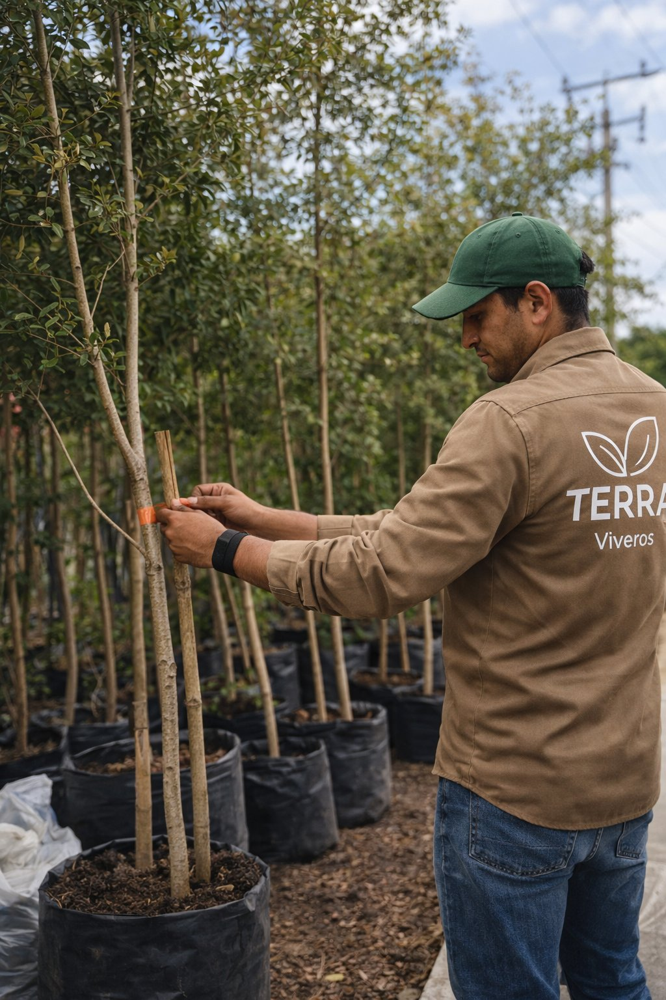
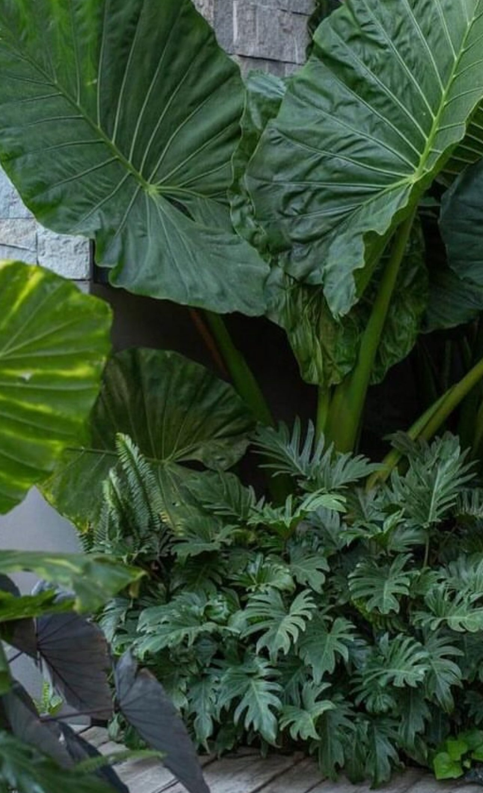
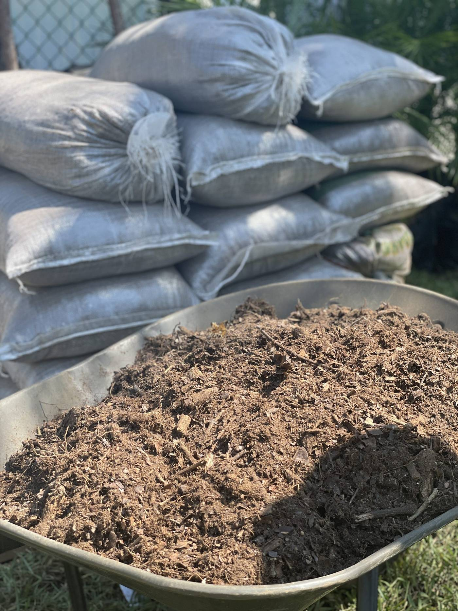
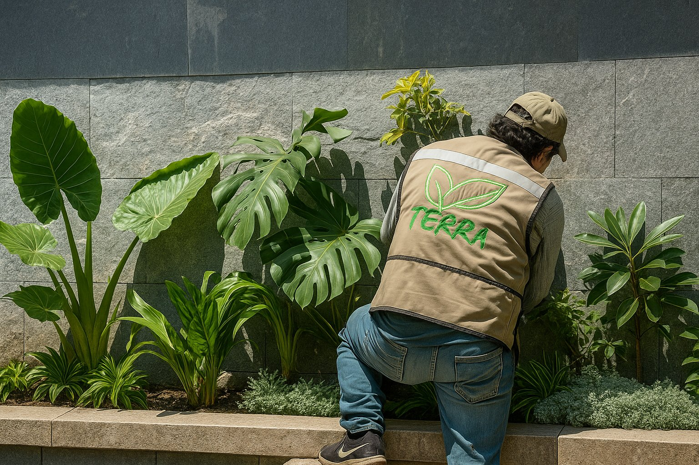

Plantas, palmas y árboles producidos directamente en nuestro vivero en Ciudad Madero. Adaptadas al calor, humedad y viento del Golfo — no traemos plantas del norte que mueren al mes.
Respuesta rápida
Viveros Terra ofrece más de 155 variedades de plantas, palmas y árboles en Tampico. Palmas desde $300, árboles desde $200 y plantas ornamentales desde $150. Productores directos en Ciudad Madero. Entrega en Tampico, Madero y Altamira.
Sin compromiso · Respondemos hoy · Lun–Sáb 9am–6pm
Selecciona la categoría y ve los precios orientativos de cada especie.

Altura rápida · Entradas y banquetas · Resistente al viento del Golfo

Impacto visual inmediato · Hoteles y jardines premium · Abanico espectacular

Interior y semisombra · Oficinas y hoteles · Purifica el aire

Bajo mantenimiento · Muy longeva · Gran valor decorativo

Jardines residenciales medianos · Elegante y resistente

Follaje plumoso · Jardines amplios · Imagen premium

Interior y semisombra · Ideal para espacios grandes

Especie única · Alto impacto visual · Jardines exclusivos
Sombra rápida · Setos y jardineras · Versátil

Floración roja espectacular · Sombra · Parques y jardines

Banquetas · Setos de privacidad · Fácil mantenimiento

Sombra rápida · Parques industriales · Muy resistente
Color todo el año · Orlas y arriates · Poco mantenimiento

Sombra abundante · Bajo mantenimiento · Crecimiento rápido

Color naranja-rojo intenso · Jardines tropicales · Premium
Bardas y enredaderas · Varios colores · Poca agua
Color intenso · Orlas y arriates · Jardines tropicales
Impacto visual máximo · Jardines y hoteles premium
Setos y bardas · Color morado · Rápido crecimiento
También manejamos: Helecho, Schefflera, Dracena, Hemerocallis, Lirio, Pothos y muchas más
Ver las 155+ variedades en el catálogoCon precios, fotos y sistema de cotización online
La mayoría de viveros en la zona revende plantas producidas en climas secos del norte de México o del extranjero. Esas plantas llegan sin adaptación al calor, humedad y viento del Golfo — y mueren en meses. Viveros Terra produce directamente en Ciudad Madero, lo que significa que cada planta que compras ya conoce el clima de Tampico desde que nació.

Las combinaciones más exitosas en jardines de Tampico
Para jardines de casa habitación en Tampico y Madero, la combinación más popular es palma del viajero o washingtona como elemento focal, ficus o laurel de la India para sombra, y bugambilia o duranta para bordes con color.
Pedir asesoríaPalmas del viajero en entradas para imagen de impacto, palmas areca en interiores y lobby, cycas en jardineras de baja manutención. El objetivo es máximo impacto visual con mínimo cuidado diario.
Cotizar para mi negocioPara áreas perimetrales industriales y banquetas, neem y trueno son los reyes: crecimiento rápido, raíz profunda no invasiva, resistentes a calor extremo y con mínimo riego una vez establecidos.
Cotizar proyecto industrialBugambilia, croton, tabachín y framboyán son ideales para zonas con exposición solar plena. Florecen mejor con más sol y aguantan perfectamente el calor de Tampico en verano.
Ver opciones de solSi buscas belleza sin preocuparte diario, cycas revoluta, neem, laurel de la India y palma cola de zorra son las opciones más resistentes. Una vez establecidas, solo riega en temporada seca.
Ver opcionesCuéntanos el tamaño de tu espacio, cuánto sol recibe y qué resultado esperas. Nuestro equipo te recomienda las 3 mejores opciones para tu caso específico — gratis y sin compromiso.
Pedir asesoría gratuita

"Compré 4 palmas del viajero para la entrada de mi casa en Madero. El asesor me explicó exactamente cómo plantarlas y qué cuidados darles. Llevan 8 meses y están espectaculares. La diferencia con las que vi en el mercado es notable."
"Surtimos todas las áreas verdes de nuestro fraccionamiento en Altamira con Viveros Terra. Palmas, árboles de sombra y plantas de ornato. Precio de mayoreo competitivo, facturaron sin problema y cumplieron con los tiempos de entrega por etapas."
Fraccionamientos, hoteles, parques industriales y desarrollos residenciales en toda la región. Precio especial por volumen, entrega por etapas y factura CFDI. Más de 20 proyectos de escala en 2025.
Explora el catálogo completo o cotiza directo por WhatsApp — respondemos hoy.